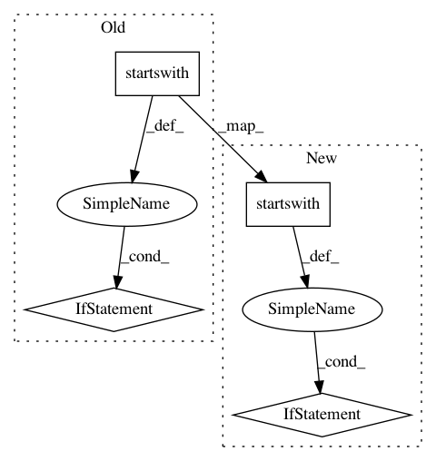

36e46ed923ae809e50bfeaca1628e834028616e5,python/ray/autoscaler/_private/command_runner.py,KubernetesCommandRunner,run_rsync_down,#KubernetesCommandRunner#,220
Before Change
])
def run_rsync_down(self, source, target, options=None):
if source.startswith("~"):
source = self.home + source[1:]
try:
flags = "-aqz" if is_rsync_silent() else "-avz"
self.process_runner.check_call([
KUBECTL_RSYNC,
After Change
self.log_prefix +
"rsync failed: "{}". Falling back to "kubectl cp"".format(e),
UserWarning)
if target.startswith("~"):
target = RAY_HOME + target[1:]
self.process_runner.check_call(self.kubectl + [
"cp", "{}/{}:{}".format(self.namespace, self.node_id, source),
target
])
In pattern: SUPERPATTERN
Frequency: 4
Non-data size: 4
Instances
Project Name: ray-project/ray
Commit Name: 36e46ed923ae809e50bfeaca1628e834028616e5
Time: 2020-12-03
Author: ekhliang@gmail.com
File Name: python/ray/autoscaler/_private/command_runner.py
Class Name: KubernetesCommandRunner
Method Name: run_rsync_down
Project Name: NVIDIA/OpenSeq2Seq
Commit Name: 4ce9a9d078d41af1a960f0e5bf16e373f69d5117
Time: 2018-06-13
Author: okuchaiev@nvidia.com
File Name: open_seq2seq/decoders/rnn_decoders.py
Class Name: BeamSearchRNNDecoderWithAttention
Method Name: _decode
Project Name: chainer/chainercv
Commit Name: acd965b969059765bbed166945dd6714904fbd5d
Time: 2017-06-09
Author: Hakuyume@users.noreply.github.com
File Name: examples/ssd/caffe2npz.py
Class Name:
Method Name: main
Project Name: NVIDIA/OpenSeq2Seq
Commit Name: 4ce9a9d078d41af1a960f0e5bf16e373f69d5117
Time: 2018-06-13
Author: okuchaiev@nvidia.com
File Name: open_seq2seq/decoders/rnn_decoders.py
Class Name: RNNDecoderWithAttention
Method Name: _decode